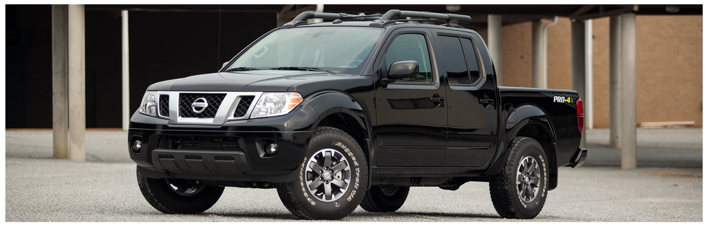

Lab 5 - Data Types / Variables
Challenge
I would say that there wasn't much problem in ths section. But it was quite a challenge making sure the variables were in place.
Problems
Not much problems came about from this, even when there were problems they were solved quick.
Reflection
It's really interesting but concerning going through the basics of coding variables in JavaScript. I describe it as concerning because of how much there needs to be specified when coding in JavaScript.
JavaScript Output

This is my truck. But not my EXACT truck and just an example photo from the Nissan website. It looks better than what I have.